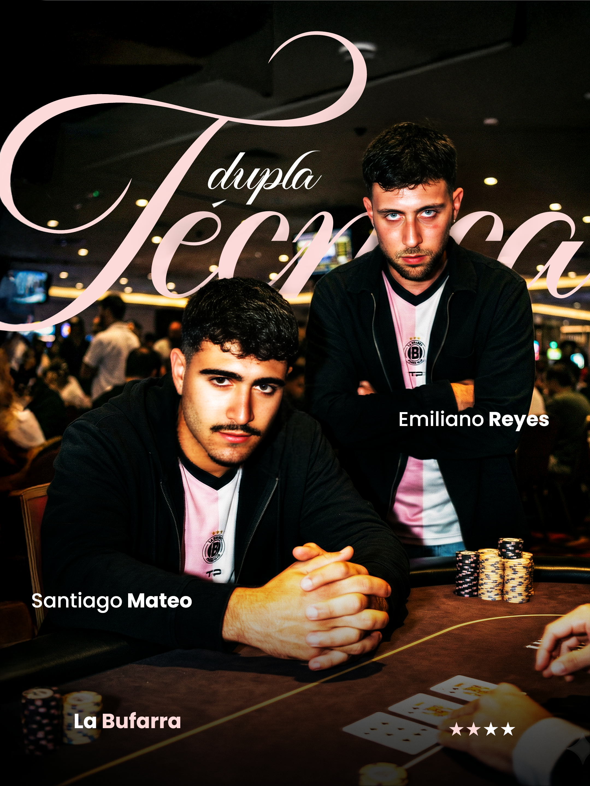
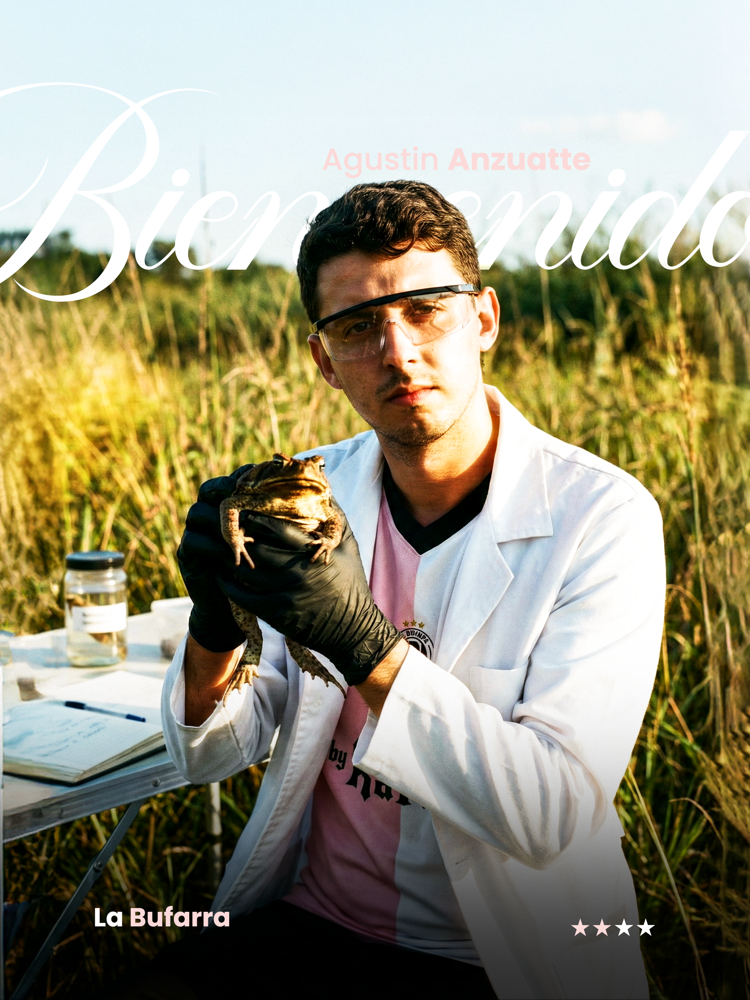
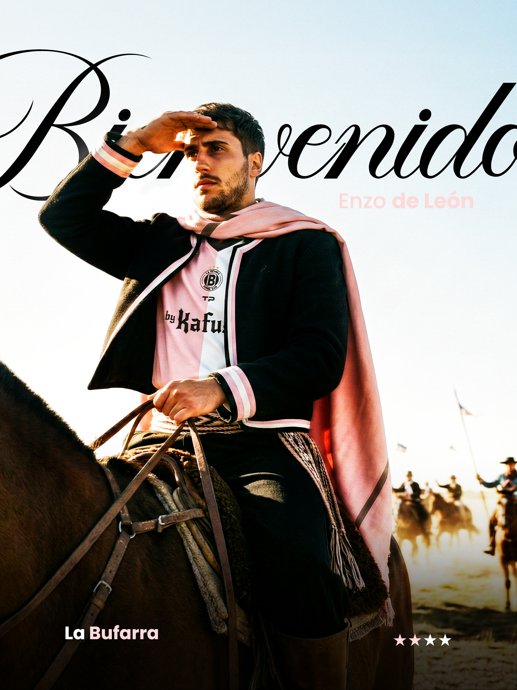
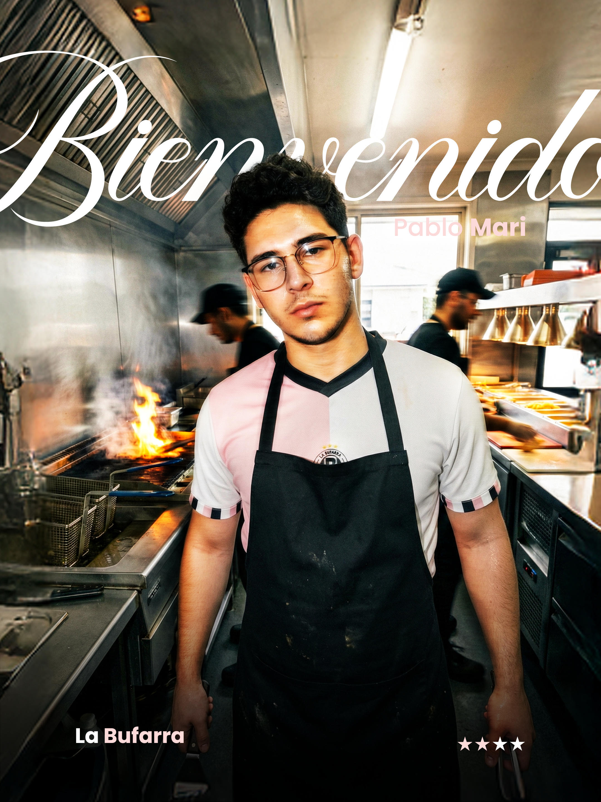
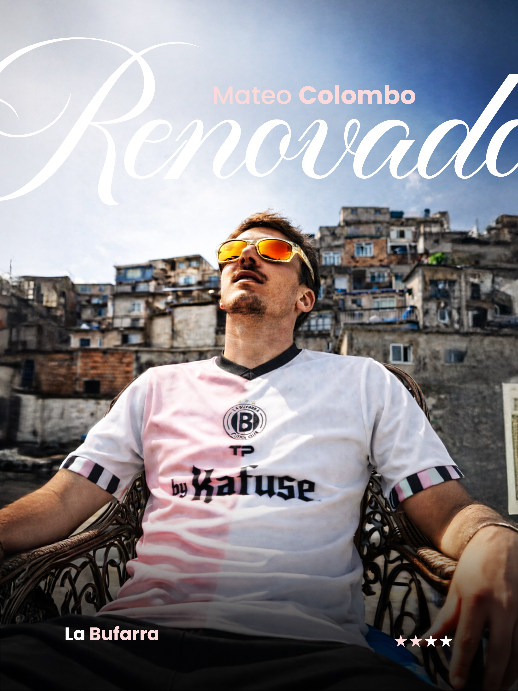
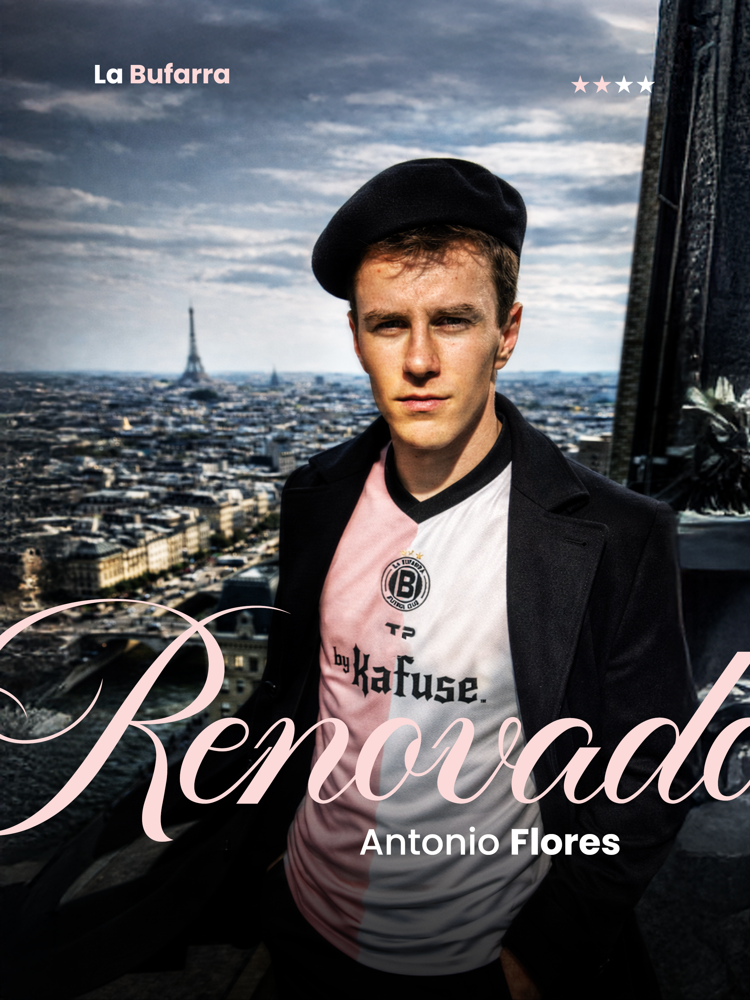

FINAL GRAPHIC

RAW AI PHOTO
↔
Creación de imágenes de alto nivel para Sport Design. Un flujo de trabajo optimizado para lograr resultados fotorrealistas con dirección de arte sintética. High-level image creation for Sport Design. An optimized workflow to achieve photorealistic results with synthetic art direction.

Armado de ideas y prompts complejos utilizando referencias visuales y GPT para establecer la base estética. Developing complex ideas and prompts using visual references and GPT to establish the aesthetic base.
Creación de imágenes de alta fidelidad en Gemini, enfocadas en texturas, iluminación y composición deportiva. Creating high-fidelity images in Gemini, focused on textures, lighting, and sports composition.
Integración de elementos gráficos, retoque de color y acabado profesional en Adobe Photoshop. Integration of graphic elements, color retouching, and professional finish in Adobe Photoshop.
Este proyecto demuestra la capacidad de la IA para generar contenido editorial de alta calidad que compite con la fotografía tradicional. El foco estuvo en la precisión anatómica, el dinamismo de la acción y la integración impecable de branding deportivo. This project demonstrates AI's capability to generate high-quality editorial content that competes with traditional photography. The focus was on anatomical precision, action dynamism, and flawless integration of sports branding.




